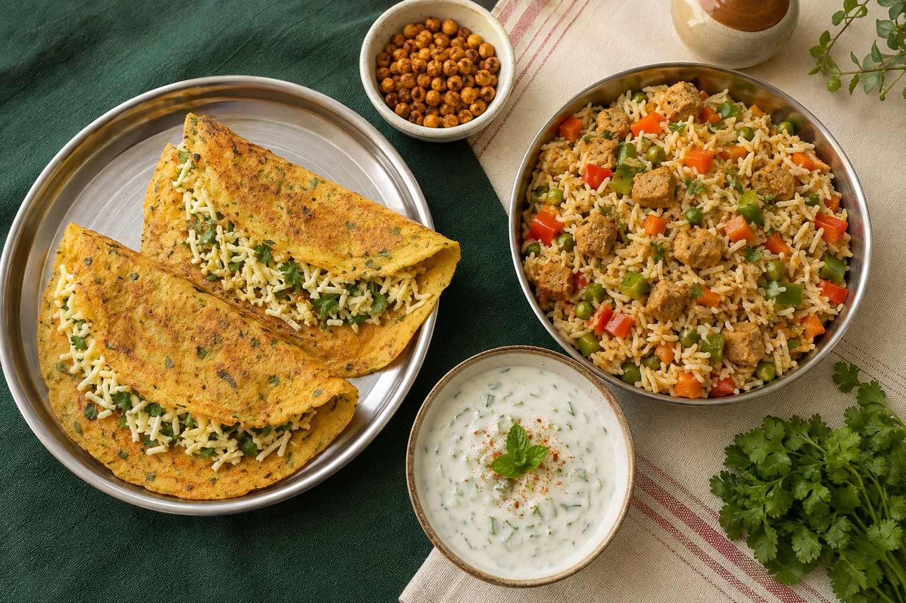

Path 1 · what I personally eat
Eggetarian breakfast + lunch
≈ 75–80g
My egg-white smoothie breakfast and fried-egg avocado toast with Greek-yogurt chaas.
See the quick calculation ↓Vegetarian + eggetarian · Indian family food
This is my practical approach to a 100g protein Indian diet: repeat a breakfast and lunch that do most of the work, calculate them once, and keep dal, rajma, chole, roti-sabzi or pasta flexible at dinner.
Important: 100g is my example—not a universal target. Use the method with a protein goal that is appropriate for you.

The Indian repeatable formula
Choose one complete path
These are alternative plans, not food to combine into one day. Pick the pair you enjoy, repeat it on busy weekdays, and rotate when you want variety.
Path 1 · what I personally eat
My egg-white smoothie breakfast and fried-egg avocado toast with Greek-yogurt chaas.
See the quick calculation ↓Path 2 · standardized from my foods
Paneer-filled besan chillas with strained yogurt, followed by soy-chunk vegetable rice and raita.
See the recipes ↓Path 1 · my seven-month default
Four boiled egg whites topped with salt, black pepper, red pepper flakes and everything-bagel seasoning; a smoothie with Orgain chocolate powder, whole milk, banana and blueberries; plus four almonds.
≈ 349–359 caloriesTwo fried eggs, one 110-calorie slice of Dave’s bread with smashed avocado, and Kirkland Greek yogurt thinned into chaas with water, salt, mint powder and black pepper.
≈ 430–530 calories plus cooking fatAdd my usual 100-calorie edamame only when useful, and the known total before dinner becomes roughly 84–91g.
See brands, portions and the full calculation →Path 2 · egg-free vegetarian breakfast
Whisk 45g besan with water, ajwain, chili, salt and finely chopped vegetables into a pourable batter.
Make two chillas in a nonstick pan with a light oil spray.
Divide 75g grated paneer between them, fold and warm until the filling is heated.
Serve with 150g thick strained yogurt, seasoned sweet or savory as you prefer.
Priyanka normally cooks this by feel. These measured portions are a website starting point so a reader can calculate the recipe once, then learn what that portion looks like.
Path 2 · repeatable Indian lunch
Prepare 50g dry soy chunks according to the package—usually soaking or boiling, draining and squeezing out excess water.
Cook them with 1½ cups vegetables, ginger, cumin and the spices you use at home, using a modest amount of oil.
Fold in ¾ cup cooked rice and portion the finished meal into repeatable containers.
Mix 150g homemade strained yogurt with cucumber, mint, roasted cumin, black pepper and salt. Keep it cold and add it after reheating the rice.
Fifty grams is the dry soy-chunk weight before soaking. Use your package label if its serving size or nutrition differs.
The Indian yogurt shortcut
This is useful in India and anywhere Greek yogurt is expensive or difficult to find. It works for raita, chaas, chilla sides and smoothies.
Why the page uses a proxy: homemade strained yogurt does not have one fixed nutrition value. Milk type, starting yogurt and straining time change it. The example math uses FAGE 0% Greek yogurt—16g protein and 80 calories per 150g—as a transparent comparison, not a laboratory measurement of homemade dahi.
Dinner comes from the family pot
If the vegetarian breakfast and lunch provide around 90g in your version, an ordinary dinner that contributes roughly another 10–15g may complete a 100g day. Portions and recipes decide the actual number.
01
Eat the same pot as the family. The lentils or beans provide most of this meal’s protein.
02
A low-protein vegetable sabzi may need a dairy, dal, paneer or soy companion to reach the dinner range.
03
Protein varies widely by pasta and sauce, so let the package and finished recipe guide the estimate.
These dinner examples are flexible meals, not calculated guarantees. Save the total only if you repeat the same recipe and portion.
My going-out rule
A restaurant day does not need to become a failed day. Get the familiar breakfast in first, enjoy the outing, and return to the plan at the next ordinary meal. Repetition creates flexibility—it does not remove it.
How the estimates were built
The vegetarian calculations standardize foods Priyanka normally cooks by feel. Besan and dry moong use USDA database values; regular paneer uses Amul Fresh Paneer nutrition; soy chunks use the manufacturer’s 52% protein statement supported by USDA textured-vegetable-protein data; cooked rice uses USDA data; and the yogurt comparison uses FAGE 0%. Vegetables and cooking oil remain ranges because the mix and spray amount vary.
Sources: USDA chickpea flour, USDA dry mung beans, USDA dry textured vegetable protein, USDA cooked rice, Amul Fresh Paneer, Amul High Protein Paneer, Nutrela soy chunks, Patanjali Foods protein statement and FAGE Total 0%.
Regular and high-protein paneer can differ dramatically in fat, calories and protein. Use the exact pack you buy.
Calculate the dry amount before soaking. Recheck when changing brand or serving size.
Homemade yogurt is the least exact value. Treat the displayed proxy as a range, not a promise.
Common questions
It can for some people when meals deliberately combine paneer, soy chunks, besan, moong and strained yogurt. Your portions and labels determine whether a specific day reaches 100g, and 100g may not be the right target for you.
No. Measure the standardized recipe while learning it, save the calculation, and then prepare it consistently by habit. Recalculate if the brand, portion or recipe changes materially.
Not exactly. Its concentration depends on the starting yogurt, milk and straining time. That is why the displayed numbers use a clearly identified commercial Greek-yogurt proxy.
Yes, but read the label. Regular paneer can be calorie-dense: Amul Fresh Paneer lists 296 calories and 20g protein per 100g, while its high-protein paneer lists 170 calories and 25g protein per 100g. Neither number represents every paneer.
No. Needs differ with body size, age, activity, goals and medical context. The repeatable-meal method can be used with a lower or higher appropriate target.